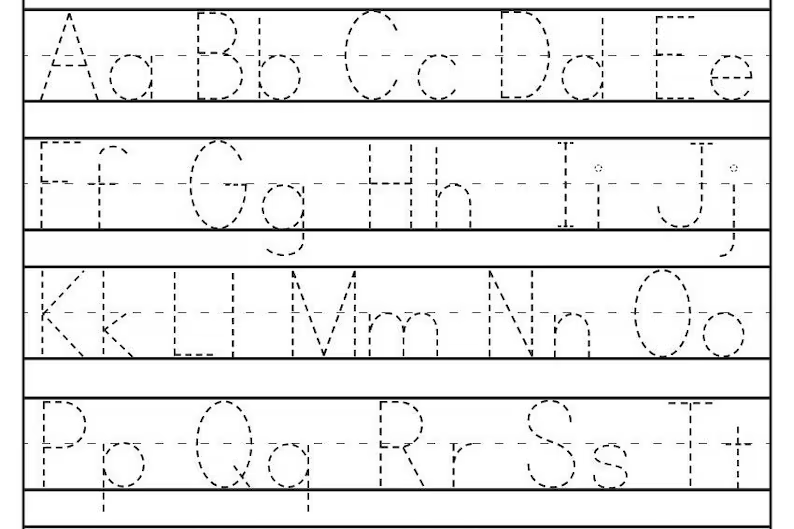
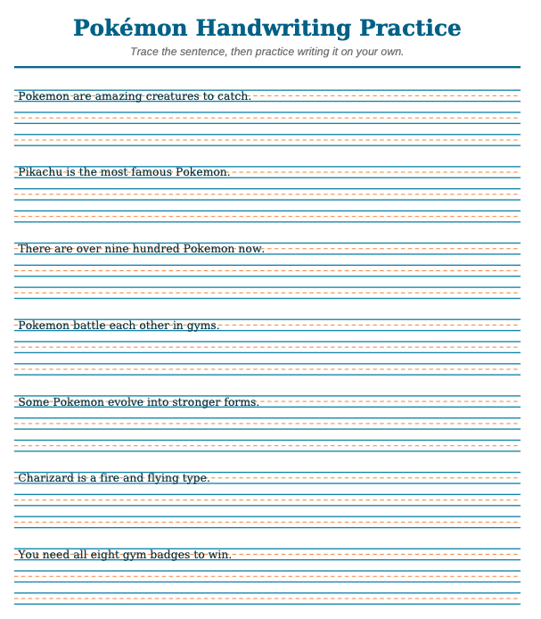
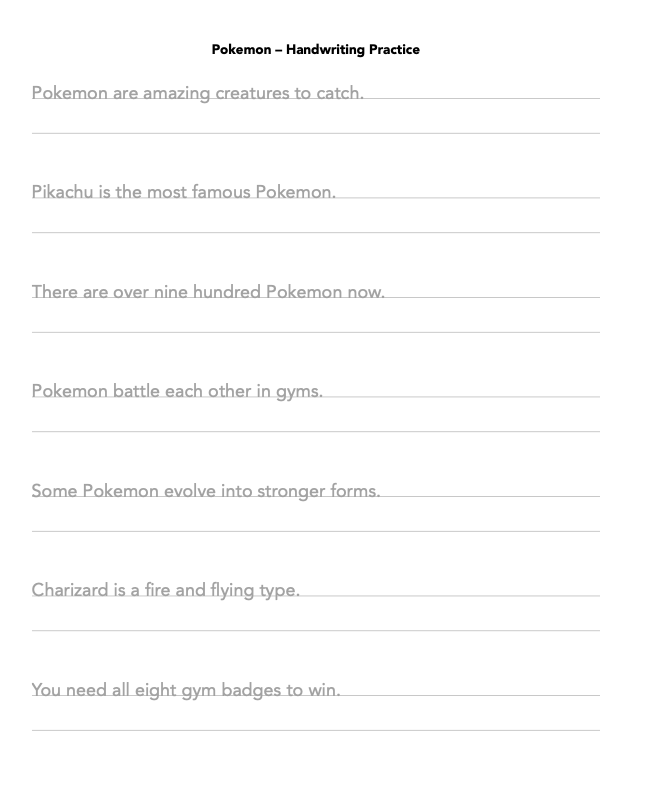
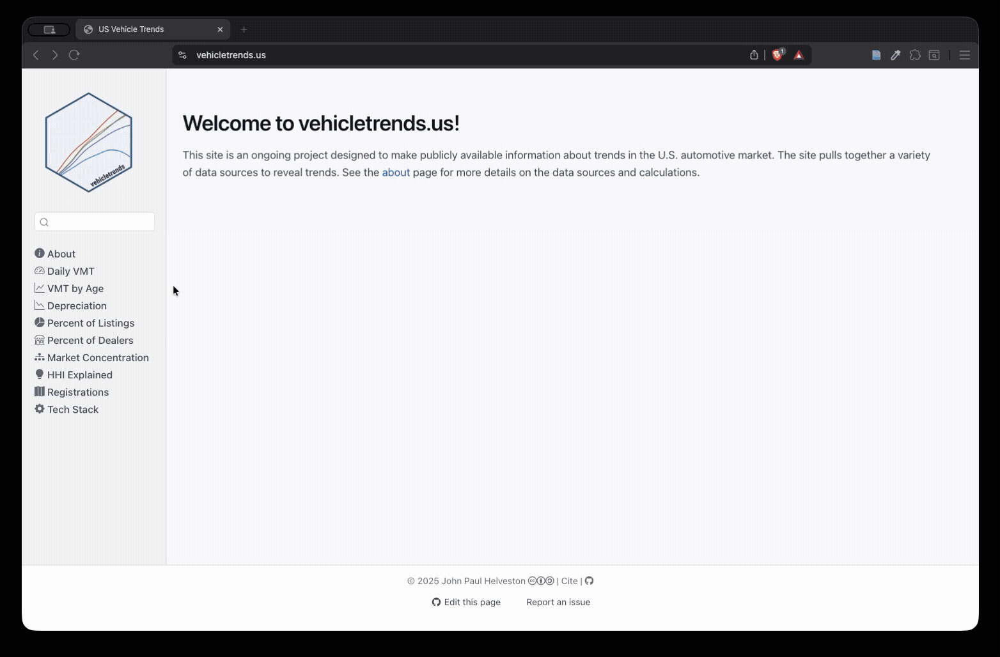
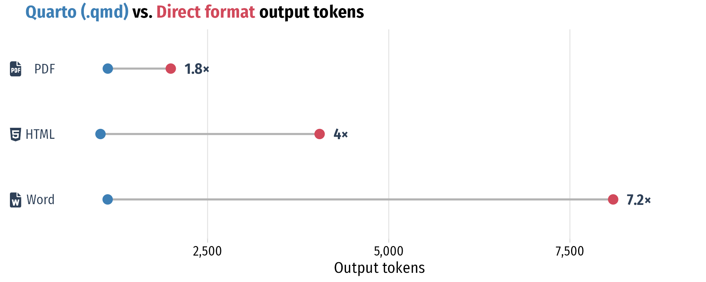
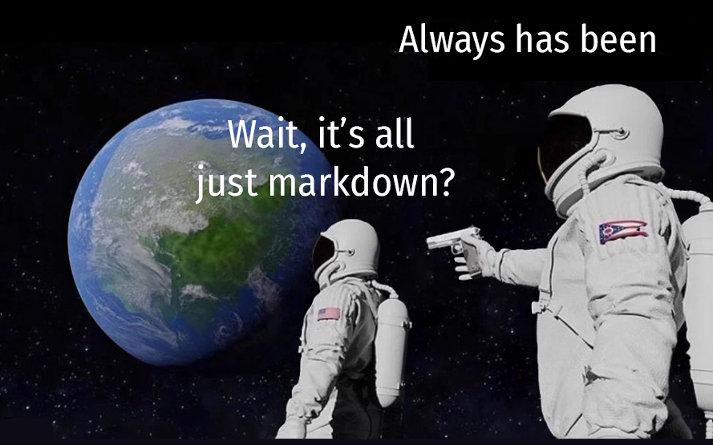
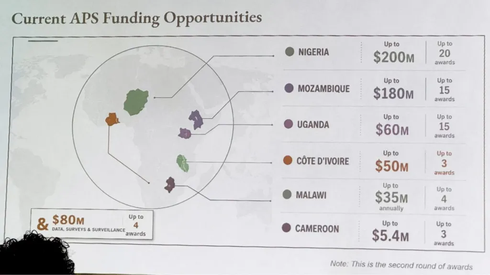

The Unreasonable Effectiveness of Quarto
John Paul Helveston
posit::conf(2026)
Houston, TX
Handwriting practice sheets

Prompt:
“Make a one-page handwriting practice sheet
with sentences about pokemon”


I want these sentences with this layout
Content entangled with Format
Quarto disentangles
Content and Format
Quarto disentangles Content and Format
Modularized content via parameters
handwriting-practice.qmd
(written by Claude Code)
minecraft.csv
(written by Me)
| sentence |
|---|
| Minecraft is a popular building game. |
| Players mine for resources underground. |
| You can build almost anything you want. |
| Creepers are sneaky and dangerous enemies. |
| Diamonds are the best ore to find. |
| Players must survive through the first night. |
| The Nether is a hot and scary place. |


Modularity
Efficiency
Correctness
Each page is its own canvas
Code chunks are all you need
Things to put in the canvas
JavaScript graphics via or packages
Things to put in the canvas
Widgets that talk to each other:
crosstalk + plotly, or ojs
Things to put in the canvas
Put in a box!
Things to put in the canvas
Put any widget in a box!
- 276 lines of hand-written MapLibre
- 1.64 GB of tiles built with
{pmtiles}(thanks Kyle Walker!) - Lives in it’s own repo
- Hosted on GitHub pages

vehicletrends

penguins dashboard
Modularity
Efficiency
Correctness
EV Sales
Sales of electric
vehicles grew 20% in 2025, reaching over 20 million sales
globally.
EV Sales
Sales of electric
vehicles grew 20% in 2025, reaching over 20 million sales
globally.
Quarto (.qmd)
125 characters
PDF (via LaTeX)
252 characters
HTML
<!DOCTYPE html>
<html lang="en">
<head>
<meta charset="utf-8">
<title>EV Sales</title>
<style>
body { font-family: Georgia, serif;
max-width: 40em; margin: 3em auto; }
h2 { font-size: 1.6em; }
</style>
</head>
<body>
<h2>EV Sales</h2>
<p>Sales of <strong>electric vehicles</strong> grew
20% in 2025, reaching over <em>20 million</em>
sales globally.</p>
</body>
</html>377 characters
EV Sales
Sales of electric
vehicles grew 20% in 2025, reaching over 20 million sales
globally.
Word (word/document.xml)
<?xml version="1.0" encoding="UTF-8" standalone="yes"?>
<w:document xmlns:w="http://schemas.openxmlformats.org/
wordprocessingml/2006/main">
<w:body>
<w:p>
<w:pPr><w:pStyle w:val="Heading2"/></w:pPr>
<w:r><w:t>EV Sales</w:t></w:r>
</w:p>
<w:p>
<w:r><w:t xml:space="preserve">Sales of </w:t></w:r>
<w:r><w:rPr><w:b/></w:rPr><w:t>electric vehicles</w:t></w:r>
<w:r><w:t xml:space="preserve"> grew 20% in 2025, reaching over </w:t></w:r>
<w:r><w:rPr><w:i/></w:rPr><w:t>20 million</w:t></w:r>
<w:r><w:t xml:space="preserve"> sales globally.</w:t></w:r>
</w:p>
</w:body>
</w:document>663 characters 😱


Small pieces have small context windows
vehicletrends.us/ lines ├── index.qmd 7 ├── about.qmd 101 ├── vmt-daily.qmd 216 ├── vmt-age.qmd 351 ├── depreciation.qmd 324 ├── percent-listings.qmd 620 ├── percent-dealers.qmd 199 ├── market-concentration.qmd 292 ├── hhi-explained.qmd 331 ├── registrations.qmd 349 ├── nearest-vehicles.qmd 34 ├── tech-stack.qmd 60 ├── cite.qmd 50 ├── LICENSE.qmd 26 └── 404.qmd 21
depreciation.qmd
## Depreciation by body style Used trucks hold their value better - than any other body style. + than any other body style, and the + gap has widened every year since 2022.
Small pieces have less to agree upon
The input that defines it
The output that consumes it
The reactive that connects them
The code chunk
Modularity
Efficiency
Correctness

Source: BBCThere is no version that throws an error
Same map from source
library(tidyverse)
library(rnaturalearth)
library(sf)
funding <- read_csv("data/africa-funding.csv")
africa <- ne_countries(continent = "Africa", returnclass = "sf")
stopifnot(all(funding$name %in% africa$name))
funded <- africa |>
inner_join(funding, by = "name") |>
mutate(
lon = st_coordinates(st_point_on_surface(geometry))[, "X"],
lat = st_coordinates(st_point_on_surface(geometry))[, "Y"]
)
ggplot(africa) +
geom_sf(fill = "grey90", color = "white", linewidth = 0.2) +
geom_sf(data = funded, fill = "#00798c", color = "white") +
geom_segment(
data = funded, color = "#2e4057",
aes(lon, lat, xend = lon + dx, yend = lat + dy)
) +
geom_text(
data = funded, color = "#2e4057", size = 5, lineheight = 0.9,
family = "Fira Sans Condensed",
aes(
lon + dx, lat + dy, hjust = ifelse(dx > 0, -0.05, 1.05),
label = paste0(name, "\n$", amount, "M")
)
) +
coord_sf(xlim = c(-38, 66), ylim = c(-36, 38)) +
theme_void()
Architect robustness into the workflow
AI writes the source
↓
↓
GitHub tests it
↓
Git shows you what changed
↓
R computes the numbers
quarto render fails loudly
GitHub Actions runs
quarto render continuously
Plain text diffs means you see what the AI changed
Numbers come from the data
## EV Sales Sales of **electric vehicles** grew 20% in 2025, reaching over _20 million_ sales globally.
$ quarto render Quitting from index.qmd:12-18 [ev-data] Error: ! `data/ev-sales.csv` does not exist. Execution halted
✓ render-site passed in 38s a1f3c9d ✓ render-site passed in 41s 7b2e004 ✗ render-site failed in 12s 3d97951 ! `data/ev-sales.csv` does not exist.
## EV Sales Sales of **electric vehicles** grew - 20% in 2025, reaching over - _20 million_ sales globally. + `r ev_percent_25` in 2025, reaching over + _`r ev_sales_25`_ sales globally.
## EV Sales Sales of **electric vehicles** grew `r ev_percent_25` in 2025, reaching over _`r ev_sales_25`_ sales globally.
Modularity
Efficiency
Correctness
“The Unreasonable Effectiveness of Quarto”
Quarto wasn’t
built for AI!
built for AI!
vehicletrends
Thanks!
jhelvy.com
jph@gwu.edu
@jhelvy
penguins dashboard